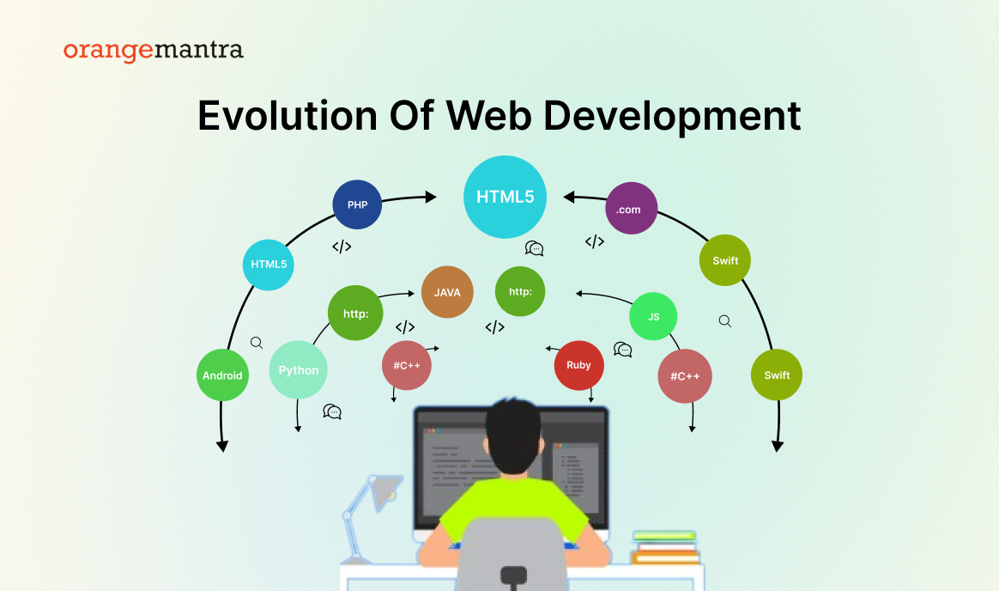
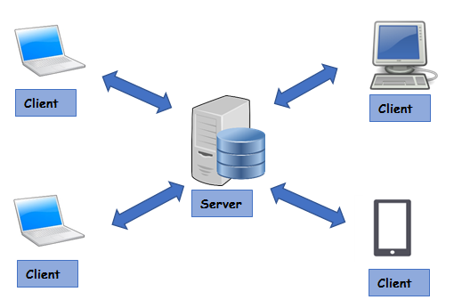
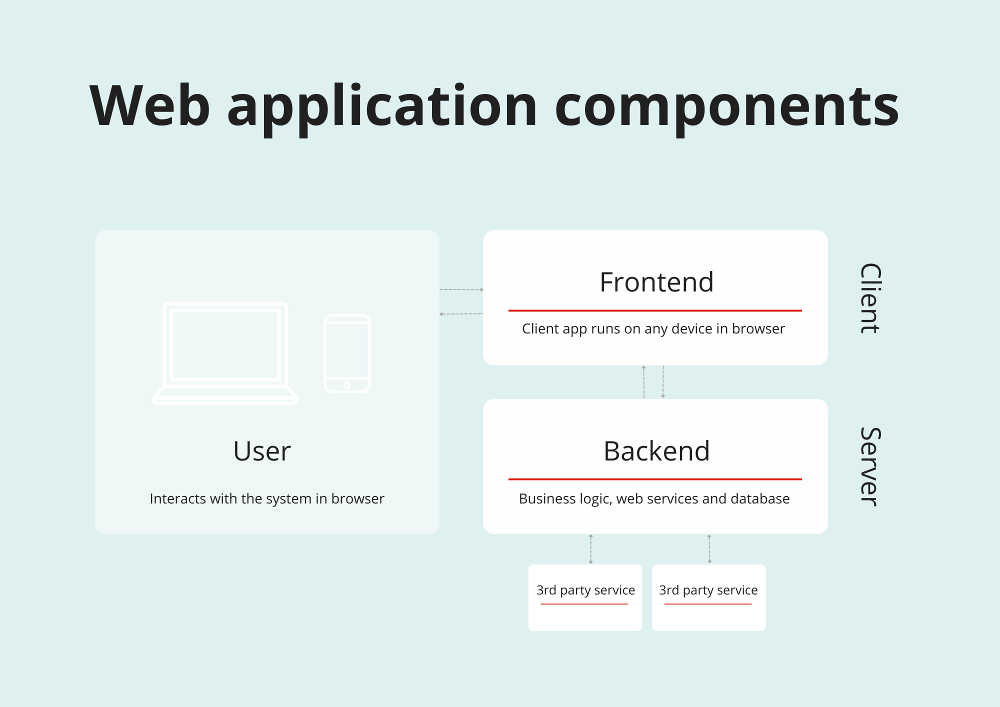
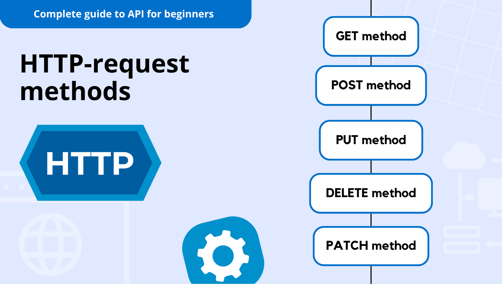
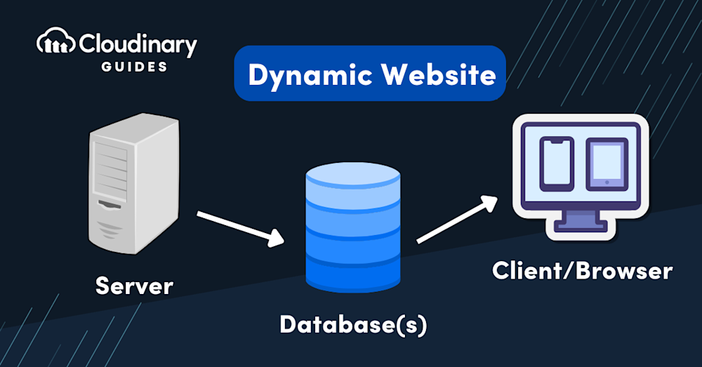

| Client and Server | Components of Web Application | Types of Web Content |
| HTTP and HTTP Request | Dynamic Web Pages | Application Servers |
| Web Security | ||

A client is a device or program that requests a service. A server is a device or program that provides that service. Clients are usually user-facing, like browsers or apps, while servers provide resources such as web pages, data, or applications. They communicate over the internet using protocols like HTTP, sending requests and responses.
Back to top
A web application consists of several components:
Web content is the information made available to users on websites. Types include:

HTTP (Hypertext Transfer Protocol) is the foundation of communication on the web. A client sends an HTTP request (with method like GET or POST, headers, and optional body) to a server. The server responds with an HTTP response (status code, headers, and body). This request-response cycle enables web browsing and API communication.
Back to top
Unlike static pages, dynamic pages change content based on conditions like user input or data from a database. Examples include login systems, e-commerce websites, and dashboards. Technologies like PHP, Node.js, and JavaScript are often used to generate dynamic content.
Back to top

Application servers act as the middle layer between web servers and databases. They handle application logic, process client requests, connect with databases, and return results. Examples: Tomcat, WebLogic, and Node.js servers.
Back to top
Web security protects websites and users from threats. Key aspects include: